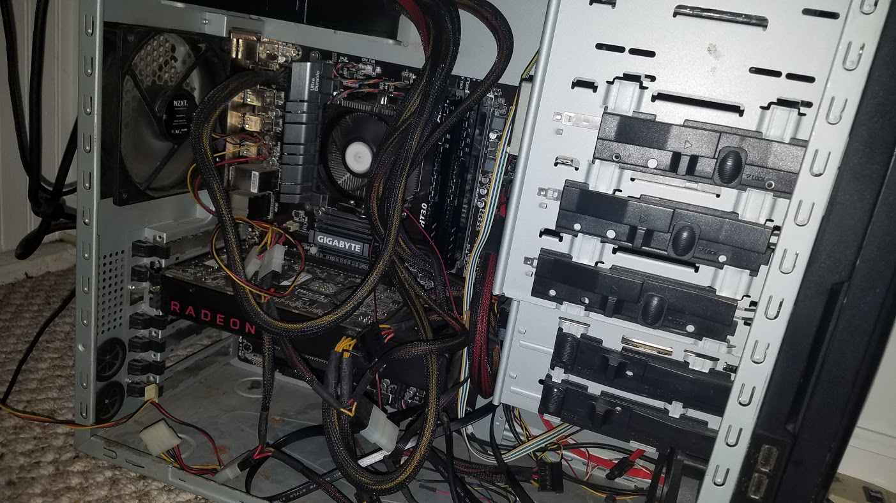

Coding
My Coding History
The first time I realized that I enjoyed coding was in my eighth grade computer science class. Unlike other middle school computer science class, we were actually learning useful languages such as Python. This class gave me my first experience in coding, and it inspired me to learn even more and make the kind of code that interested me. The next computer science class I took was AP Computer Science in my senior year. In this class, I learned javascript, web protocols, binary, and other foundational concepts. After exceeding in that class, I gained a lot of knowledge on javascript and decided that programming was what I wanted to do.
Computer Hardware
PC Building Experience
As I addressed in the 'Passions' section, gaming was a big part of my life growing up. After finding out about the capabilities of PC gaming, I was dead set on wanting to build my own. With the help of my older cousin, I was able to build my first gaming PC. Since then, I have upgraded the same computer with new ram, a new SSD, processor, and so on to keep it running newer games. This experience has greatly increased my knowledge computer hardware and how to install it.
Video Editing
In School
Video editing is a skill that I initially began practicing in my Audio Video Technology class in highschool. After taking the class for 3 semesters and completing the pathway, I had learned a lot about camera techniques, video editing, and advanced editing techniques.
Personal Video Editing
Outside of school, I had always been interested in video game montage videos. Wanting to make my own videos, I picked up a new video editing software on my PC and began collecting clips. The experience I gained from making these videos taught me to improvise and adapt to using an unfamiliar software.